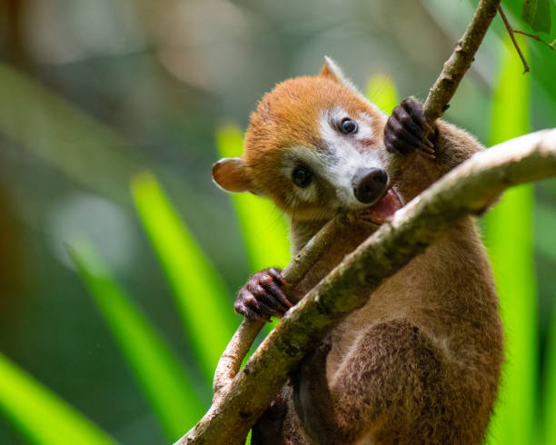
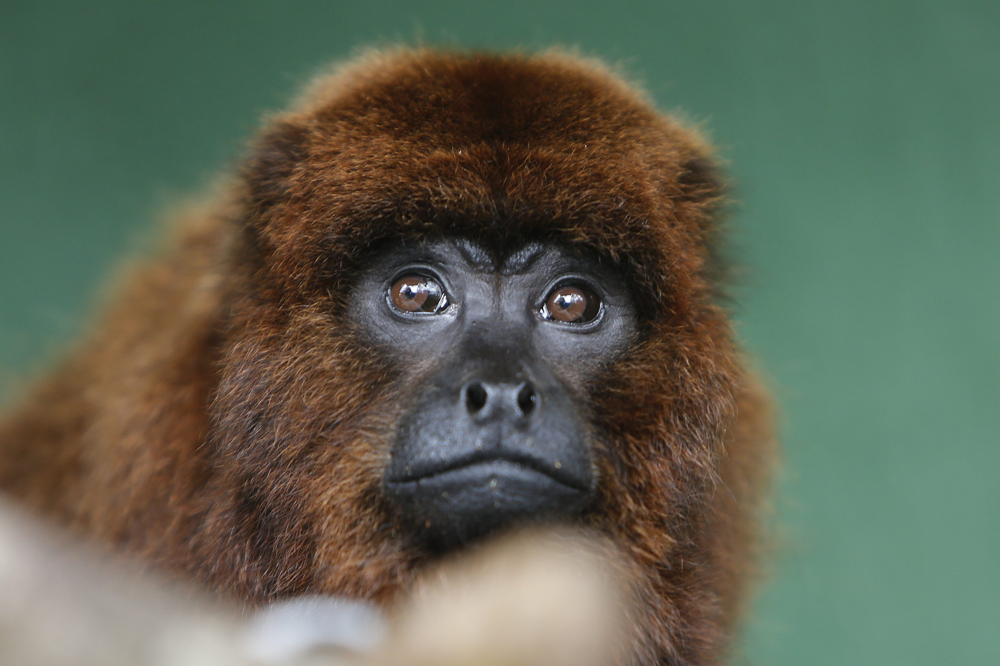
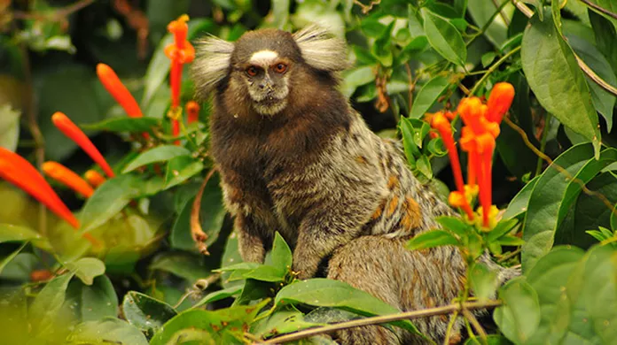
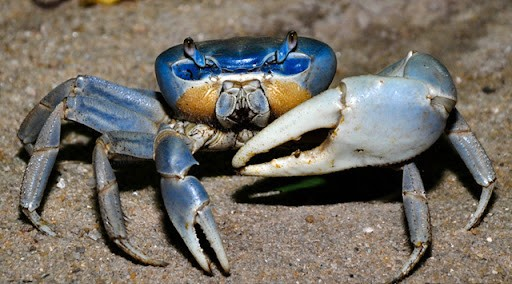

• Animais predominantes da Ilha
A Fauna da Ilha das Caieiras, em Vitória, ES, é rica e diversificada, com destaque para espécies marinhas e terrestres que habitam o manguezal local. Entre os animais marinhos, encontram-se diversas espécies de peixes, moluscos e crustáceos, muitos dos quais são capturados pela comunidade e fazem parte da gastronomia da região. Além disso, aves como garças e outras espécies utilizam o manguezal como refúgio e fonte de alimento.
Espécies terrestres também são encontradas na ilha, incluindo o bugio-ruivo, um primata que se alimenta principalmente de folhas, e outros animais como saguis, morcegos, quatis, e répteis como teiús e jiboias. O manguezal da Ilha das Caieiras é um ecossistema fundamental para a vida marinha e para a comunidade pesqueira, servindo como berçário, local de alimentação e refúgio para diversas espécies. A preservação desse ambiente é crucial para a manutenção da biodiversidade local e para o sustento das atividades pesqueiras
• Bugio-ruivo (Alouatta guariba)
O Bugio-Ruivo (Alouatta guariba) é um primata típico das flor estas tropicais da América do Sul, especialmente encontrado em regiões de Mata Atlântica no Brasil. Ecologicamente, ele desempenha um papel importante como dispersor de sementes, ajudando na regeneração das florestas ao se alimentar de frutas e folhas. Seu habitat natural são florestas densas e áreas com grande cobertura arbórea, onde vive em grupos sociais e utiliza os galhos para se locomover com agilidade. Por sua sensibilidade a mudanças ambientais, o Bugio-Ruivo é um indicador importante da saúde dos ecossistemas florestais. CURIOSIDADE: Um Bugio-Ruivo foi resgatado em 2023 na Ilha das Caieiras, em Vitória-ES, após ser encontrado boiando debilitado. A espécie esteve em risco devido à perda de habitat e outras ameaças. O animal foi resgatado por pescadores e levado para avaliação e cuidados veterinários, com o objetivo de devolvê-lo à natureza.
ACESSE AQUI!• Sagui-de-tufo-branco (Callithrix jacchus)
O Sagui-de-tufo-branco (Callithrix jacchus) é um pequeno primata característico das florestas do Nordeste do Brasil, especialmente presente na Caatinga e em áreas de Mata Atlântica. Ecologicamente, ele desempenha um papel fundamental na polinização e dispersão de sementes, contribuindo para o equilíbrio e a regeneração da vegetação nativa. Seu habitat natural inclui matas com densa vegetação e bordas de florestas, onde vive em grupos familiares e se locomove com agilidade pelos galhos. De comportamento curioso e adaptável, o Sagui-de-tufo-branco é sensível à degradação ambiental, sendo um importante indicador da conservação dos ecossistemas onde habita.
• Siri-Azul (Callinectes sapidus)
O Siri-azul (Callinectes sapidus) é um crustáceo marinho típico de regiões costeiras e estuarinas, encontrado principalmente no Oceano Atlântico, incluindo a costa brasileira. Ecologicamente, exerce um papel relevante na cadeia alimentar, atuando como predador e presa de diversas espécies aquáticas, além de contribuir para a limpeza dos fundos marinhos ao se alimentar de matéria orgânica. Seu habitat natural inclui manguezais, estuários e áreas de águas rasas, onde se locomove com facilidade graças às suas patas adaptadas para a natação. Por ser sensível à poluição e às alterações nos ecossistemas costeiros, o Siri-azul é um bom indicador da qualidade ambiental dessas regiões.
• Guaiamum (Cardisoma guanhumi)
O Guaiamum (Cardisoma guanhumi) é um crustáceo terrestre típico de regiões costeiras tropicais, encontrado principalmente em manguezais e áreas alagadas do litoral brasileiro. Ecologicamente, ele desempenha um papel importante na aeração e fertilização do solo, cavando tocas profundas que ajudam na drenagem e na reciclagem de nutrientes. Seu habitat natural inclui os manguezais e suas bordas, onde vive em tocas e sai principalmente ao entardecer para se alimentar de matéria vegetal em decomposição. Por ser sensível à degradação dos manguezais e à captura excessiva, o Guaiamum é um importante indicador da saúde ambiental dessas áreas costeiras.




.jpg)
